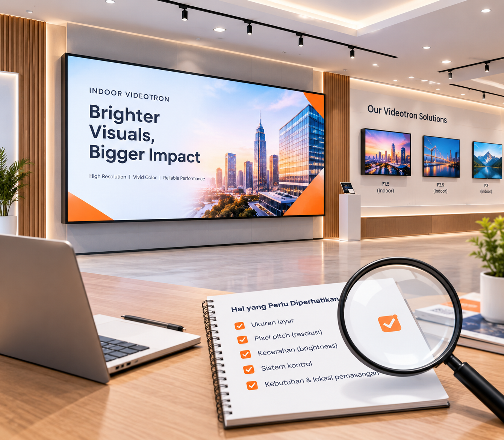

Cara Memilih Videotron Indoor yang Tepat untuk Kebutuhan Bisnis Anda

Memilih videotron indoor bukan sekadar soal ukuran layar. Pixel pitch, kecerahan, sistem kontrol, hingga lokasi pemasangan sama-sama menentukan apakah layar tersebut akan bekerja optimal untuk ruang Anda — atau justru menjadi investasi yang kurang terpakai.
Banyak pelanggan datang kepada kami dengan pertanyaan yang sama: “Berapa ukuran yang pas, dan pixel pitch berapa yang perlu?” Jawabannya selalu dimulai dari satu hal — jarak pandang audiens terhadap layar. Setelah itu, spesifikasi lain menjadi jauh lebih mudah ditentukan.
1. Pahami Jarak Pandang sebelum Menentukan Pixel Pitch
Pixel pitch adalah jarak antar titik LED pada layar, biasanya ditulis dalam milimeter (misal P1.5 berarti 1,5 mm). Semakin kecil angkanya, semakin rapat pikselnya, dan semakin tajam gambar saat dilihat dari dekat. Sebaliknya, untuk layar yang dipandang dari jarak jauh, pixel pitch lebih besar masih terlihat baik dengan biaya lebih hemat.
- 1–2 meter dari layar → P0.9 sampai P1.25 (lobi kecil, meeting room).
- 2–4 meter → P1.25 sampai P2.5 (showroom, kafe, retail).
- Lebih dari 5 meter → P2.5 ke atas biasanya sudah cukup.
“Rule of thumb yang sering kami pakai: jarak pandang dalam meter, dikali 1.000, dibagi 2–3 — itulah pixel pitch yang paling ekonomis tanpa mengorbankan ketajaman.”
2. Ukuran Layar Harus Mengikuti Ruang, Bukan Sebaliknya
Ukuran layar yang terlalu besar di ruang kecil membuat audiens merasa tertekan, sementara layar yang terlalu kecil tidak memberi dampak apa pun. Ukur lebar dan tinggi dinding atau area pemasangan terlebih dahulu, lalu sesuaikan dengan rasio yang tersedia. Umumnya videotron indoor memakai rasio 16:9, namun desain khusus seperti layar mengikuti kolom juga bisa dibuat.
3. Kecerahan: Lebih Terang Tidak Selalu Lebih Baik
Untuk indoor, kecerahan sekitar 600–1.000 nits sudah lebih dari cukup. Layar yang terlalu terang di ruangan tertutup justru membuat mata cepat lelah dan konsumsi listrik membengkak. Pastikan layar memiliki sensor kecerahan otomatis agar tampilan tetap nyaman sepanjang hari.
4. Perhatikan Sistem Kontrol dan Kemudahan Konten
Sistem kontrol adalah “otak” layar. Tanyakan apakah perangkat mendukung manajemen konten berbasis cloud, pemutaran terjadwal, dan pembagian layar (split screen). Fitur ini yang akan sangat menentukan kenyamanan operasional jangka panjang tim Anda.


5. Estimasi Biaya Secara Realistis
Harga videotron indoor dipengaruhi pixel pitch, ukuran, merek LED, dan kompleksitas instalasi. Alih-alih membandingkan harga per meter persegi saja, mintalah penawaran lengkap — termasuk struktur pendukung, kabel, controller, dan garansi — agar perbandingannya apple-to-apple.
Kesimpulan
Videotron indoor terbaik adalah yang spesifikasinya pas dengan ruang dan tujuan Anda — bukan yang paling mahal atau paling besar. Jika Anda masih ragu menentukan pixel pitch atau ukuran, tim kami siap membantu survei lokasi dan menyusun rekomendasi tanpa biaya konsultasi.